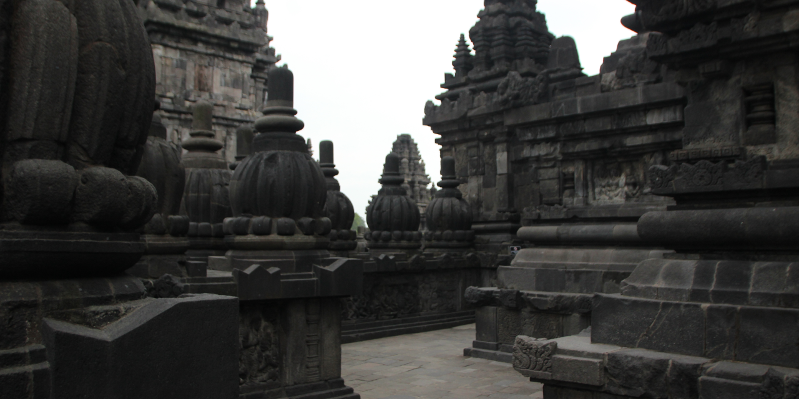

Ragam Candi
Candi memiliki fungsi yang beraneka ragam. Secara umum fungsi candi tidak dapat dilepaskan dari berbagai kegiatan keagamaan, terutama Hindu dan Buddha. Oleh sebab itu, sejarah pembangunan candi masih erat kaitannya dengan perkembangan agama Hindu dan Buddha sejak 1500 SM. Karena sejarah agama Hindu dan Buddha berasal dari India, maka bangunan candi juga banyak yang mendapat pengaruh India dalam berbagai aspeknya, seperti teknik bangunan, gaya arsitektur, hiasan, dan sebagainya.
candi borobudur
Borobudur adalah sebuah candi Buddha yang terletak di Borobudur, Magelang, Jawa Tengah, Indonesia. Borobudur adalah candi atau kuil Buddha terbesar di dunia, sekaligus salah satu monumen Buddha terbesar di dunia.

candi arjuna
Candi Arjuna, peninggalan Kerajaan Hindu tertua di Pulau Jawa, ditemukan pada tahun 1814 oleh Thedorf Van Elf, seorang tentara Belanda. Meskipun sejarah pembangunannya masih misterius, prasasti di sekitarnya menegaskan statusnya sebagai candi Hindu tertua di Pulau Jawa. Pada abad ke-19, proses pemeliharaannya dimulai, termasuk mengeringkan air yang membanjiri bangunan ini oleh HC Cornelius pada tahun 1856, seorang Inggris yang bekerja untuk pemerintah kolonial.

candi prambanan
Candi Prambanan adalah bangunan candi bercorak agama Hindu terbesar di Indonesia yang dibangun pada abad ke-9 Masehi. Candi ini juga candi Hindu terbesar di Indonesia, sekaligus salah satu candi terindah di Asia Tenggara.